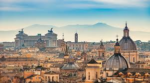
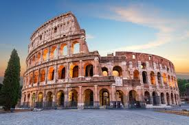
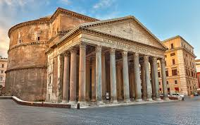
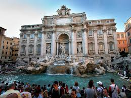
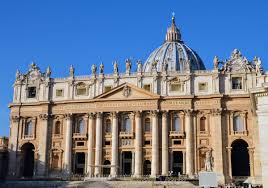
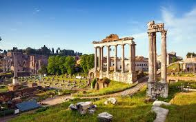

Rzym jest stolicą Włoch i jednym z najstarszych miast w Europie. Został założony według legendy w 753 roku p.n.e. przez Romulusa. Miasto nazywane jest „Wiecznym Miastem”, ponieważ jego historia trwa nieprzerwanie od ponad dwóch tysięcy lat. Rzym był centrum potężnego Imperium Rzymskiego, które miało ogromny wpływ na rozwój Europy. Obecnie jest ważnym ośrodkiem turystycznym, kulturalnym i religijnym, a na jego terenie znajduje się także Watykan.

Koloseum to jeden z najbardziej znanych zabytków starożytnego Rzymu. Zostało zbudowane w I wieku naszej ery i mogło pomieścić około 50 tysięcy widzów. Odbywały się tam walki gladiatorów oraz różne widowiska publiczne. Budowla jest symbolem potęgi Imperium Rzymskiego. Dziś jest jedną z największych atrakcji turystycznych we Włoszech.

Panteon to starożytna świątynia poświęcona wszystkim bogom. Został zbudowany w II wieku naszej ery za panowania cesarza Hadriana. Najbardziej charakterystycznym elementem budowli jest ogromna kopuła z otworem na środku, zwanym oculusem. Przez ten otwór do wnętrza wpada światło słoneczne. Obecnie Panteon pełni funkcję kościoła i jest doskonale zachowany.

Fontanna di Trevi to najsłynniejsza fontanna w Rzymie. Została ukończona w XVIII wieku i zachwyca bogatymi rzeźbami. Centralną postacią jest bóg mórz – Neptun. Według tradycji wrzucenie monety do fontanny zapewnia powrót do Rzymu. Każdego roku turyści wrzucają tam miliony monet.

Bazylika św. Piotra znajduje się w Watykanie i jest jednym z najważniejszych kościołów na świecie. Została zbudowana w XVI wieku. W jej wnętrzu znajdują się dzieła sztuki, w tym Pieta Michała Anioła. Kopuła bazyliki jest jednym z symboli Rzymu. Co roku odwiedzają ją miliony pielgrzymów i turystów.

Forum Romanum było centrum życia politycznego i społecznego starożytnego Rzymu. Znajdowały się tam świątynie, bazyliki oraz budynki publiczne. To właśnie tutaj odbywały się ważne uroczystości i przemówienia. Dziś można podziwiać ruiny dawnych budowli. Miejsce to pozwala lepiej zrozumieć historię starożytnego świata.